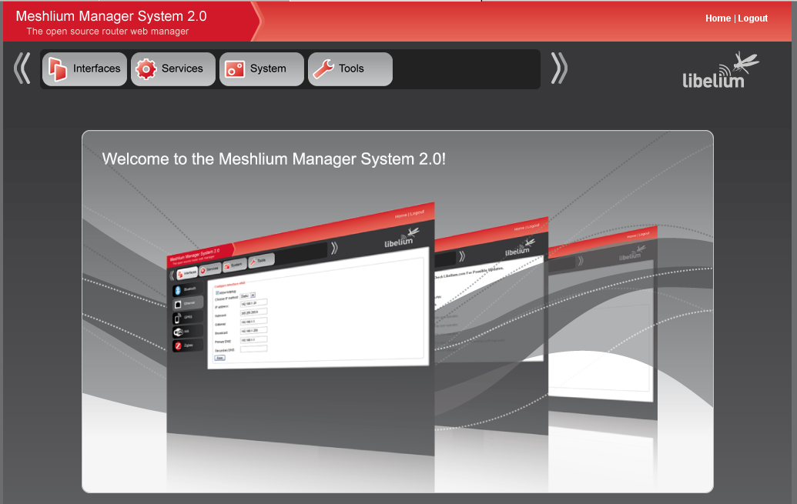
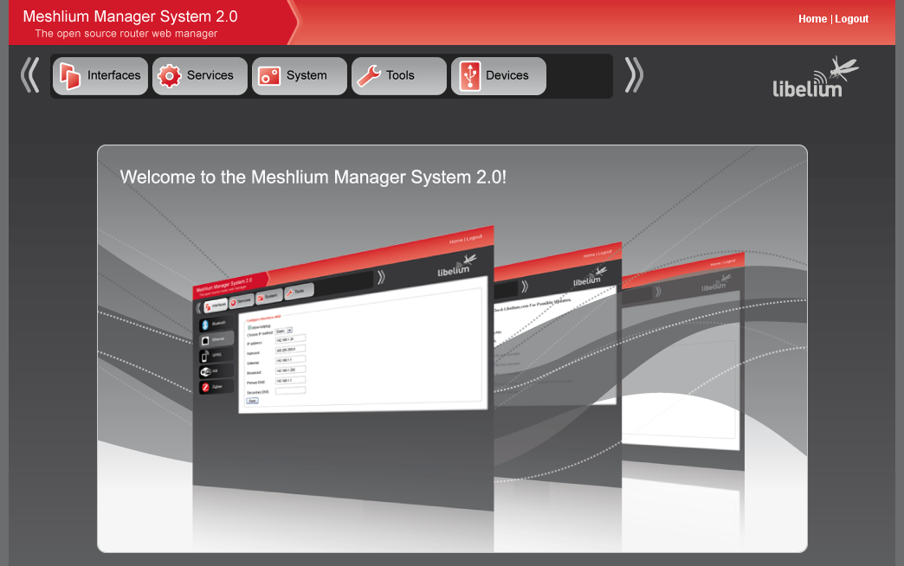
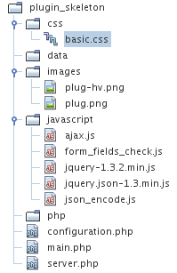
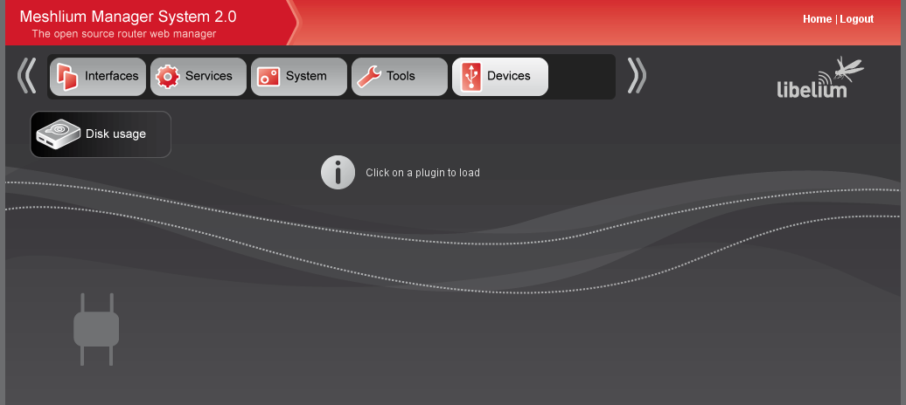
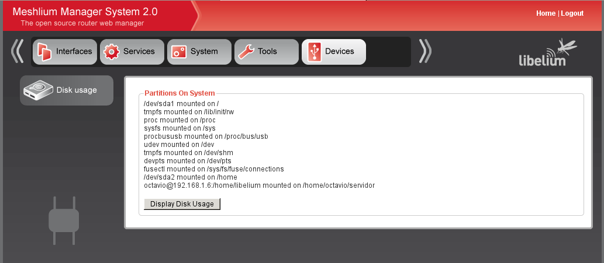
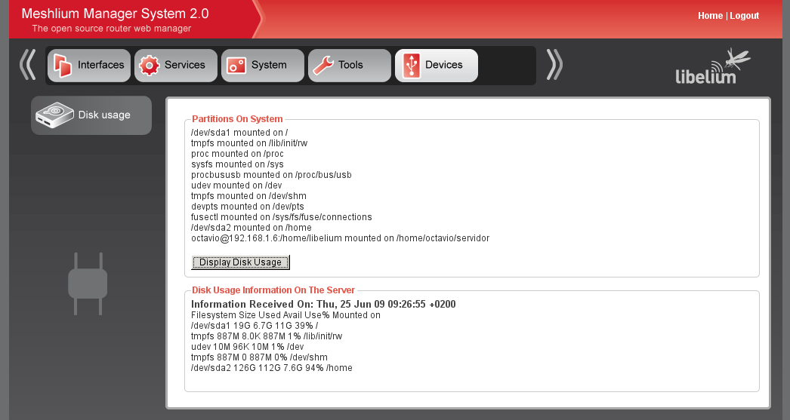

Manager system 2.0 Plugin documentation
Meshlium Manager System 2.0 architecture
Meshlium Manager System 1.0 was a monolithic applicaton, adding new
funcionalities was had and difficult. Our aim when redesigning Manager
system was to make an application where adding new funcionalities
should be as easy as possible.
To archieve that the application architecture defines three main
levels. Core, sections and plugins.
Core
Core is just the functions and control structures needed to navigate
throught sections and load plugins. Core differenciate betwen plugin
load and plugin server and loads the necesary plugin files. Core also
gives a public API with common functions that can be used by plugins.
Sections
Sections are just plugin containers. A section will contain related
plugins, in that way Core will display plugins within a section to
allow an easy navigation.
Plugins
Plugins are the hearth of Meshlium Manager System 2.0. Plugins are
applications that control, modifies or present system parameters. Plugins are
grouped in sections.
All the Meshlium Manager System architecture is designed to make plugin
development as easy as possible. So plugins could be developed, studied
or modified without need to modify or know Core behaviour.
Sections
As told before, sections are plugin containers. Now the internal
structure of a subsection will be detailed and a tutorial will show how
to create a new section step by step.
Section skeleton
Subsection skeleton is quite simple and easy. A section is composed by
a folder and a configuration file.
A folder has to be created on plugins folder on Meshlium Manager System. Inside
the folder a file named configuration.php has to be created with the
following content:
<?php
$type="SELECTOR"; // This must contain a SELECTOR VALUE and just is used for integrity check.
$section_name="NAME OF THE SECTION";
$section_description="Skeleton plugin for study propourses";
$section_icon="section.png"; // Icon to use when section not selected
$section_icon_selected="section-hv.png"; // Icon to use when section is selected
?>
The content is just a simple piece of PHP code that declares
some varibles and two default images that can be used to make custom icons.
section.png is the base designed to make the section icon when section is not selected, and
section-hv.png is the base designed to make the section icon when section is selected.
The variables that should be defined on configuration.php are:
- $type="SELECTOR"; This is just a control varible. Any section
without this variable declared in that way will not be considered a
section and will be ignored by the core.
- $section_name. This variable contains the name of the section and
will be displayed by the core. Note that folder name and section name
can be different.
- $section_description. This variable should be filled with a brief
description of the content that will be inside this section.
- $section_icon. This variable should have a relative path to an icon. If
this variable points to a valid icon, core will use that icon on
navigation menus when the section is not selected.
- $section_icon_selected. This variable should have a relative path to an icon. If
this variable points to a valid icon, core will use that icon on
navigation menus when the section is selected.
How to make a new section
How can I create a new section? Well that is really easy. In some steps
we will create a new section for Meshlium Manager System 2.0.
We want to create a new section called "Devices" that will contain
plugins that interacts with system devices.
Initially we have this configuration in Meshlium Manager System 2.0:

Those are the steps needed to create the new section.
- Create a new folder on plugins folder on the Meshlium Manager
System instalation path.
mkdir -p /var/www/manager_system/plugins/devices
- Copy to the folder that you have just created the icon that will
be used to display de section. You can download and use the following icons:

- With your favourite text editor create a file named configuration.php on the folder
created on step 1, and copy the following content:
<?php
$type="SELECTOR"; // This must contain a SELECTOR VALUE and just is used for integrity check.
$section_name="Section Devices";
$section_description="System devices management plugin";
$section_icon="devices.png";
$section_icon_selected="devices-hv.png";
?>
With those three simple steps a new section (empty right now) has been
added to Meshlium Manager System.

Plugins
Structure has been designed to make it easy to share, update,
modify, delete and study the plugins. To archieve this, plugins should
place all the files that they need inside it's own folder structure.
This makes really easy move plugins from one section to another, share
new plugins with others and modify a plugins with new updates.
To study a plugin the fact that all the files that the plugin can use
(except the API provided by the core) makes really easy to follow how a
plugin works and how to change or improve it's behaviour.
Plugin skeleton
The simplest plugin needs just a folder and two files. The folder will
contain all the plugin files and the two fundamental files needed are a
configuration file very similar to the configuration file used with
sections, and a main PHP file that will be loaded by core. With this
minimal configuration, display file will be called by core when the
plugin is loaded. But will be also called by core when a request to the
plugin is made. To avoid complexity is recomended the use of a display
file and a server file, so the minimum number of files for a plugin can
be just two but three is recomended.
For more complex plugins, core will search for two main files. One will
be used when the plugin is loaded and the other, the server file, will
be used when an AJAX request is launched against the plugin.
Plugin in fact has two different behaviours, presentation and server.
Presentation will show initial display. Server instead will be loaded
only when a request to the plugin has been made, and will receive data
from request to perform actions. Server can return more data to be
displayed too. With Meshlium Manager System 2.0 an AJAX framework has
been provided to make a easy task the communication between client and
server side of the plugin.
This is the standard plugin skeleton provided with Meshlium Manager
System 2.0:

Now let's detail all the folders and files.
- Configuration.php
- This file declares to the core the plugin. Core will check this
file and use it's data to assure that the plugin is a valid plugin. Any
plugin with bad data on this file or without this file will be ignored
by the core.
- main.php
- This is the standar display file. It's name can be changed to
any other, but should be updated on the configuration file. This file
will be loaded by the core when the plugin is loaded. Any plugin
without a display file will be ignored by the core.
- server.php
- This is the plugin server file. It's name can be changed also
but should be declared on configuration file too. This file will be
loaded when core detects a request to the plugin.
- CSS folder.
- CSS files used by the plugin should be placed here.
- A basic css file is provided with the plugin skeleton but as
ever you can change it's name or have as many css as you want.
- Data folder
- This folder can be used by the plugins to store local data or
as a temporal data folder. Skeleton contains this folder but the folder
is empty by default.You can create as many subfolders as you need and
as many files as you need.
- Images folder
- This folder should be used to store images, icons and
multimedia files that will be used by the plugin. You can create as
many subfolders as you need and as many files as you need.
- The skeleton has two images that can be used as base to make your own icons,
plug.png is the image that is designed to be used when the plugin is not selected, and
plug_hv.png is the image that is designed to be used when the plugin is selected.
- Javascript folder
- This folder should contain the javascript files used in the plugin
- Ajax framework files, form validation and jquery are provided with the skeleton.
- Php folder
- This folder should contain any other php needed in addition to
configuration.php, server.php and main.php.
The use of this folder distribution is recommended but not mandatory.
The only mandatory files nedeed are configuration.php and the files
that are declared in configuration.php.
configuration.php structure:
<?php
$type="PLUGIN"; // This is just for integrity checks.
$plugin_name="NAME OF THE PLUGIN"; // THIS SHOULD BE A LINE.
$plugin_version="VERSION STRING"; // THIS SUOULD BE A LINE.
$plugin_author="AUTHOR INFORMATION"; //THIS SHOULD BE A LINE.
$plugin_description="DESCRIPTION OF THE PLUGIN"; // THIS SHOULD BE A SMALL DESCRIPTION
$plugin_main_file="main.php"; // BETER IF USED THE STANDARD main.php
$plugin_server_file="server.php"; // BETER IF USED THE STANDARD server.php
$plugin_icon="images/plug.png"; // BY DEFAULT
$plugin_icon_selected="images/plug-hv.png"; // BY DEFAULT
?>
The file format is quite similar to the configuration.php file for a
section. Those are the variables that should be included commented.
- $type="PLUGIN"; This is just a control varible. Any plugin
without this variable declared in that way will not be considered a
plugin and will be ignored by the core.
- $plugin_name. This variable contains the name of the plugin and
can be used by the core to display information about the plugin. Note
that folder name and plugin name
can be different.
- $plugin_version. This is information about the version of the
plugin. This version number can be managed by plugins to automatically
detect new versions and make a plugin for update installed plugins.
- $plugin_author. Name of the author, or authors of the plugin.
- $plugin_description. Brief description of the plugin and what is
designed to do.
- $plugin_main_file. This is the file that will be called by core
when the plugin is loaded by client. This must point to a valid file,
if don't core will mark plugin as invalid and not display plugin
information.
- $plugin_server_file. This is the file that will be called by core
when an request to the plugin is done
by the client. This must point to a valid file, if don't core will mark
plugin as invalid and not display plugin information. This file can be
the same as $plugin_main_file, but is recommended to manage display and
server request on different files.
- $plugin_icon. This icon will be used in navigation menu when the plugin is not
selected.
- $plugin_icon_selected. This icon will be used in navigation menu when the plugin is
selected.
main.php structure:
A plugin can interact with core in order to modify core behaviour or
get information from core variables. This is a list of all those
variables that can be used by a plugin and what are those variables
designed for:
- Core interaction variables
- $_main_title. This variable will load the page title.
- $_plugin_css. You can define an array with the css files you
want to load. The css must be on the plugin css folder.
- $_plugin_javascript. You can define an array with the
javascript files you want to load. Javascript files must be under the
plugin javascript folder.
- Predefined variables
- $section contains the section folder name.
- $plugin contains the plugin folder name.
- $section and $plugin can be used to make a link to this plugin by just reference. For example:
$html="<a href=\"index.php?section=$section&plugin=$plugin\">This plugin</a>";
- $base_plugin contains the path that must be used as start to
includes for plugin includes that need the local path.
- $url_plugin contains the url base that must be used to include
html items such as images.
- $API_core contains the path to the core API folder.
- Output variable
- $html. Once plugin is finished core will check $html variable
and output its content if any is stored. Is better to use $html
variable to avoid direct call of the plugin from browsers.
server.php structure:
Server can access to some core variables too. This is a list of all those
variables that can be used by a server side of a plugin and what are those variables designed for:
- Predefined variables
- $section contains the section folder name.
- $plugin contains the plugin folder name.
- $base_plugin contains the path that must be used as start to
includes for plugin includes that need the local path.
- $url_plugin contains the url base that must be used to include
html items such as images.
- $API_core contains the path to the core API folder.
- Output data
- Server produced data will returned to the ajax call that made
the request directly. This is made to give server side a total control
over the output headers and data.
How to make a new plugin
How can I create a new plugin? Well that is really easy as it was to
create a new section. In some steps
we will create a new plugin for Meshlium Manager System 2.0.
We want to create a new plugin that will be located inside the section
called "Devices". The plugin will show mounted partitions, then an AJAX
call will be made to request more infomation about the disk usage of
the partition.Those are the steps needed
to create the new plugin.
- Create a new folder for the plugin on section folder.
mkdir -p /var/www/manager_system/plugins/devices/disk_usage
- Copy the plugin skeleton to the new folder. Tutorial will asume that the plugin skeleton can be found on /home/user/plugin_skeleton (Note that a plugin skeleton is shipped with the Meshlium Manager System 2.0.
cp -rf /home/user/plugin_skeleton/* /var/www/manager_system/plugins/devices/disk_usage/.
- Now open the configuration.php file and modify values for our new plugin.
<?php
$type="PLUGIN"; // This is just for integrity checks.
$plugin_name="Disk usage"; // THIS SHOULD BE A LINE.
$plugin_version="0.1"; // THIS SUOULD BE A LINE.
$plugin_author="Octavio Benedí"; //THIS SHOULD BE A LINE.
$plugin_description="Plugin for monitoring disk usage."; // THIS SHOULD BE A SMALL DESCRIPTION
$plugin_main_file="main.php"; // BETER IF USED THE STANDARD main.php
$plugin_server_file="server.php"; // BETER IF USED THE STANDARD server.php
$plugin_icon="images/disk-usage.png"; // BY DEFAULT
$plugin_icon_selected="images/disk-usage-hv.png"; // BY DEFAULT
?>
- Next step is to prepare the main.php file, to show data when the
plugin is loaded. Just open main.php and prepare the php script.
<?php
// Title of the page:
$_main_title="Disk usage management";
// Load our own CSS stylesheet.
$_plugin_css=Array("basic.css");
// Load javascript that will be used by the plugin.
$_plugin_javascript=Array("jquery-1.3.2.min.js","ajax.js");
// Scan partitions mounted on system:
exec('mount -l',$mounted_partitions);
// Prepare each line to be displayed as html
foreach ($mounted_partitions as $partition)
{
$partition_list=explode(' ',$partition);
$partitions_html.='<div><span>'.$partition_list[0].' mounted on '.$partition_list[2].'</span></div>';
}
$html='<fieldset><legend>Partitions on system</legend>
<div class="information">'.$partitions_html.'</div>
<input type="button" onclick="simple_ajax_call(\'\',\'output\',\''.$section.'\',\''.$plugin.'\')" value="Display Disk Usage">
</fieldset>
<div id="output"></div>';
?>
- Our server will return html with the disk usage each time is called.
<?php
include_once $API_core.'complex_ajax_return_functions.php';
$html="<fieldset><legend>Disk usage information on the server</legend>";
$html.="<h3>Information received on: ". date(DATE_RFC822)."</h3>";
$html.='<div class="information>';
exec('df -h',$disk_usage);
foreach ($disk_usage as $disk)
{
$html.='<div>'.$disk.'</div>';
}
$html.='</div></fieldset>';
echo $html;
?>
- The CSS file for the plugin is:
/* CSS for devices plugin. */
.information{
margin-bottom:15px;
color:#333333;
}
#plugin_main_div{
text-align:left;
}
#plugin_main_div h2{
color:#E35C50;
font-weight:bold;
}
#plugin_main_div h3{
color:#444444;
font-weight:bold;
text-transform:capitalize;
}
input[type="button"]{
cursor:pointer;
}
Now our new plugin is finished. Is possible to define a new css and
declare much more options. But this is just a simple example. And this is the result of
the plugin that we have made.
Plugin selector is added on the left side.

Plugin main window is loaded on the right side

When plugin makes an ajax request data on plugin main window is updated.
